① フォトリアル（写真・映画調）
Photorealistic, like a high-end film still (DSLR 85mm), realistic skin pores & material textures, volumetric lighting, shallow depth of field, ultra sharp 8k detail.
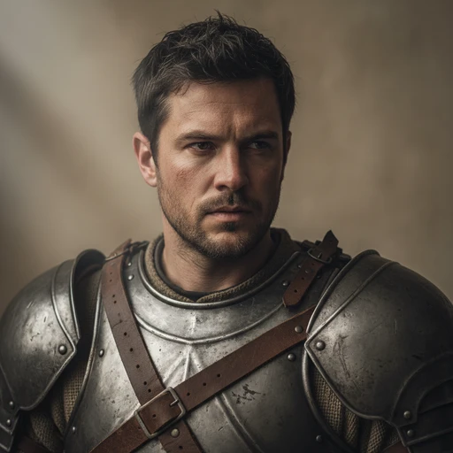
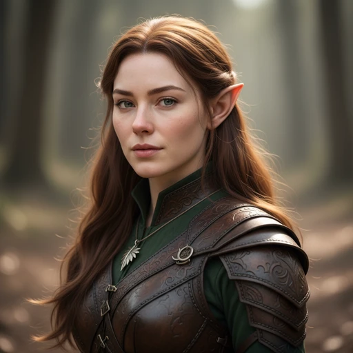
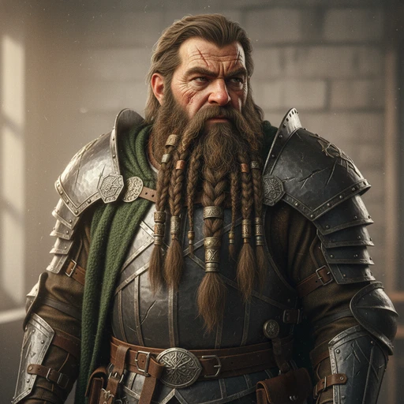
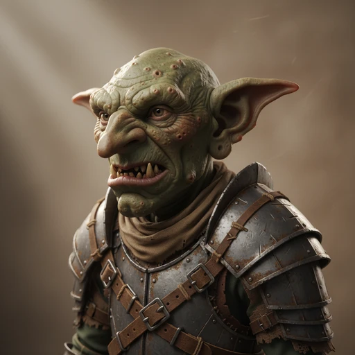
② 高精細デジタル概念画（ArtStation系）
Highly detailed digital painting, premium fantasy concept art (ArtStation), intricate rendering of armor/fabric/skin, dramatic rim lighting, painterly yet near-photorealistic.
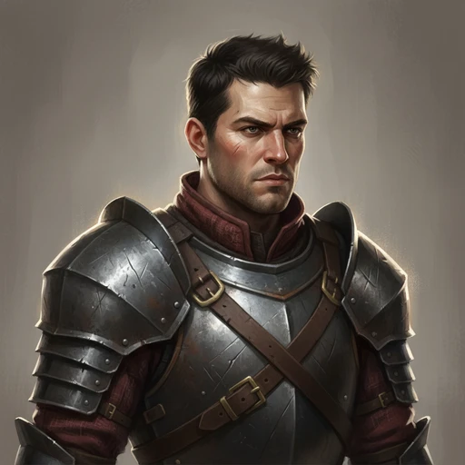
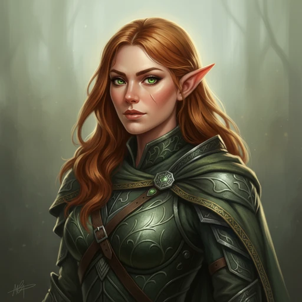
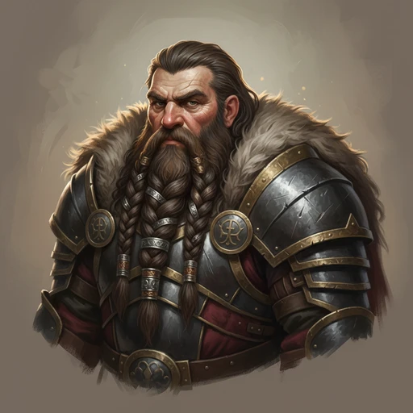
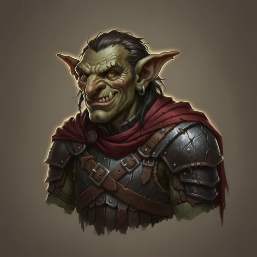
③ クラシック油彩（写実）
Richly detailed oil painting, classical realism / old master portraiture, lifelike chiaroscuro, fine visible brushwork, deep glazed colors, gallery-quality realism.
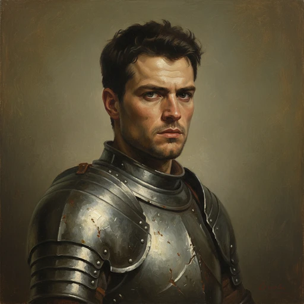
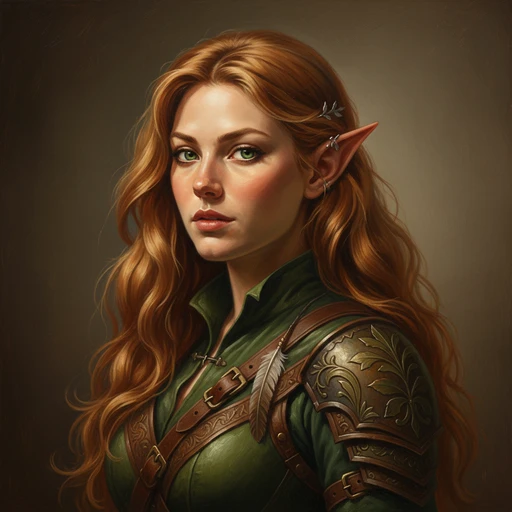
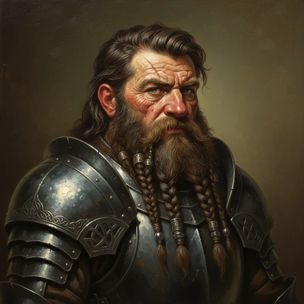
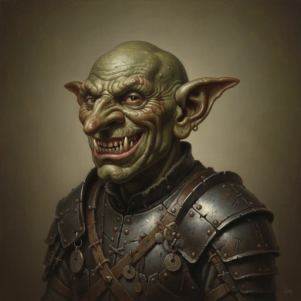
④ 3D CGIレンダー（Unreal / Octane系）
Ultra-detailed 3D render, cinematic CGI (Unreal Engine 5 / Octane), PBR materials, subsurface scattering, ray-traced global illumination, crisp micro-detail, AAA game quality.
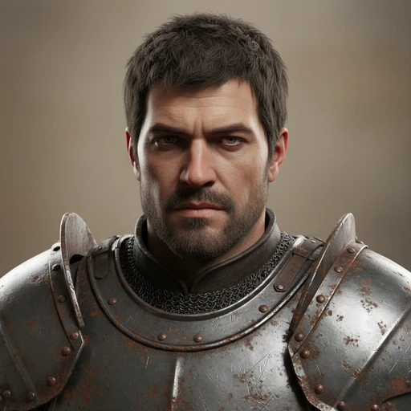
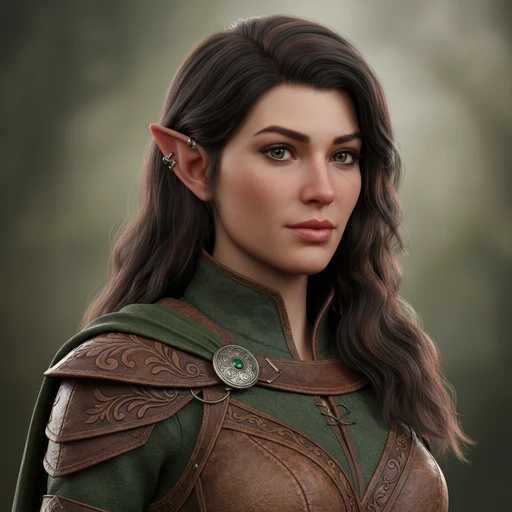
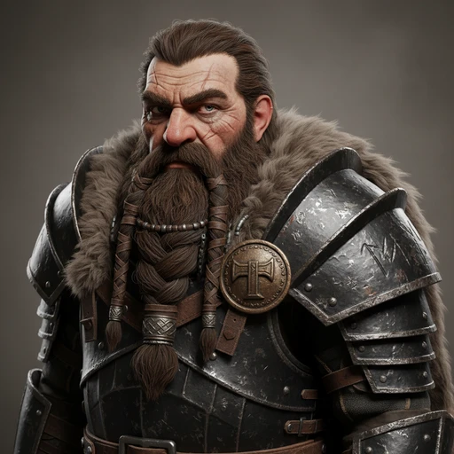
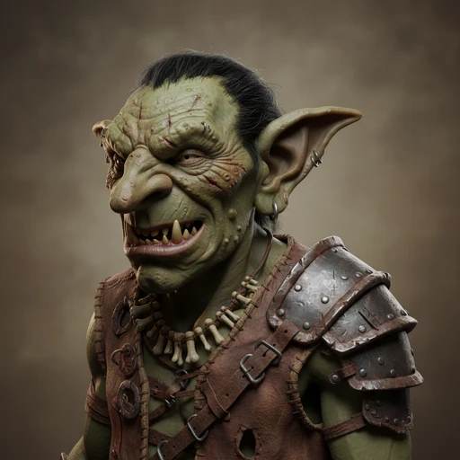
⑤ ダーク・グリッティ写実
Gritty hyper-detailed dark fantasy realism, weathered grimy textures, scars/dirt, desaturated muted palette, harsh moody directional lighting, atmospheric and somber.
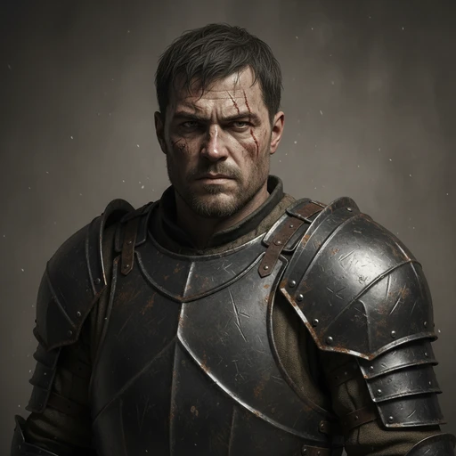
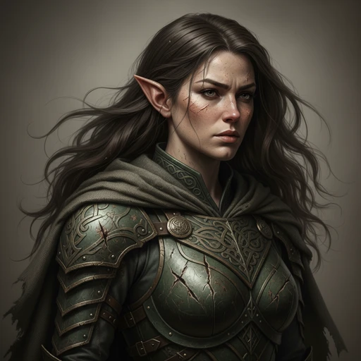
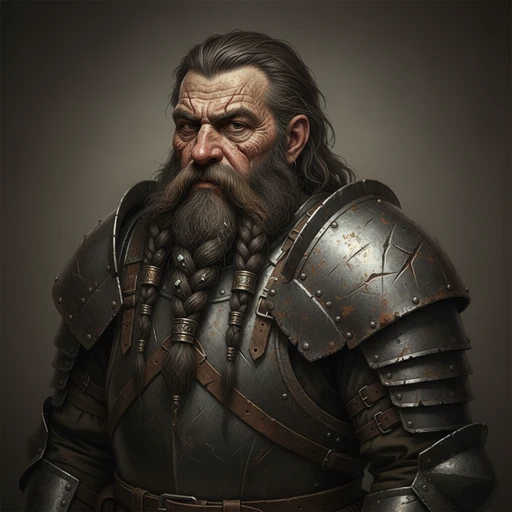
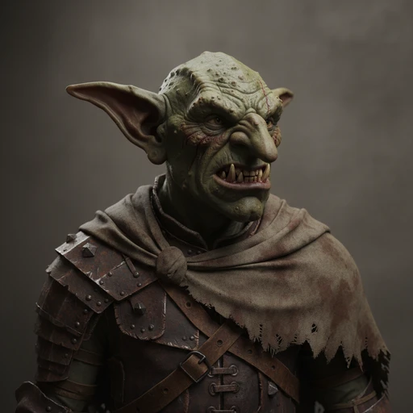
※ この比較ページは画風選定用の一時ページです。選定後に削除できます。